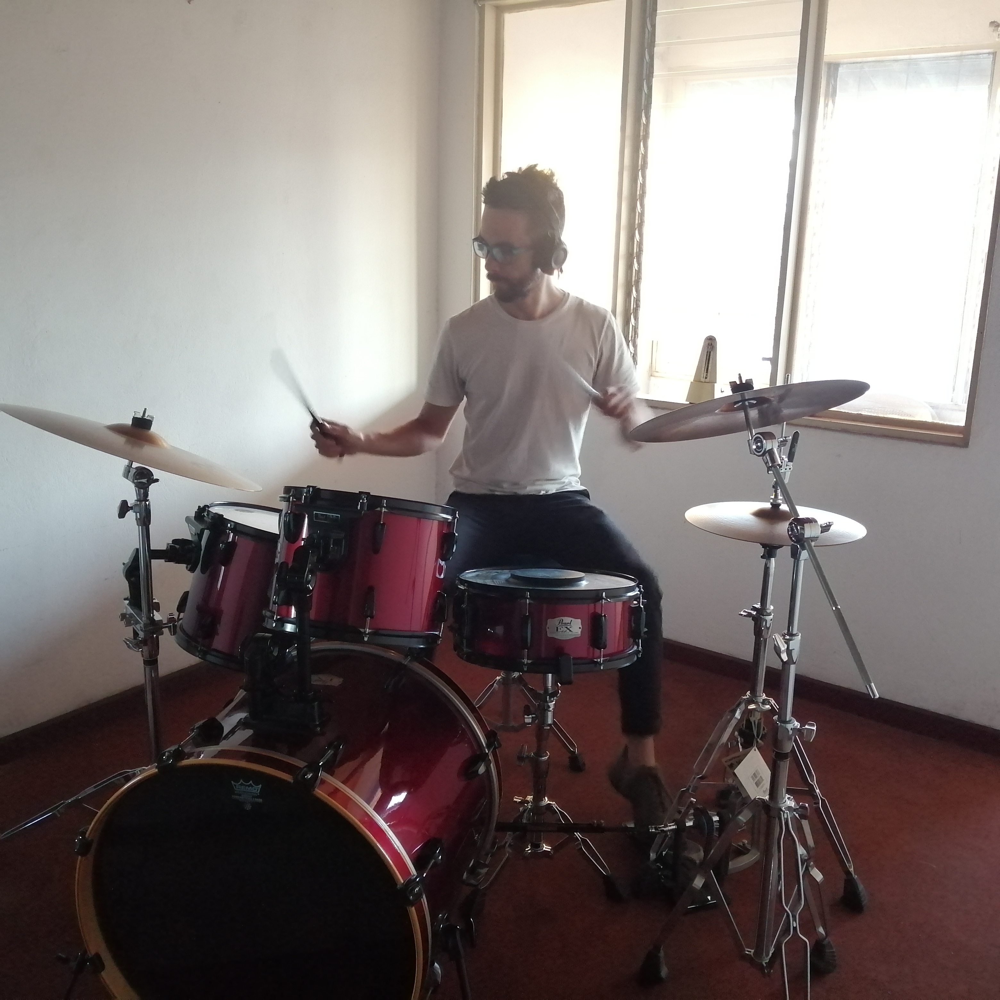

¡Hey hola, soy Chris!
Estudiante de Desarrollo de Software & entusiasta del back end.
Acerca de mí

¡Hola! Mi nombre es Christian. Soy estudiante de Desarrollo de Software con un fuerte interes por el back end y bases de datos. Actualmente estoy en mi segundo año en la Universidad CENFOTEC para obtener mi técnico en Desarrollo de Software. Aspiro a una carrera que me permita combinar mi primer título en Gestión Ambiental con el Desarrollo de Software.
Cuando no estoy estudiando, probablemente estaré nadando, leyendo sobre compra de acciones, haciendo trading, cocinando postrecitos...o quizás practicando la batería.
Mi experiencia
| Desarrollo de Software | Bases de datos | Git |
|---|---|---|
| Experiencia con el paradigma imperativo usando Python y la POO usando Java. | Experiencia creando tablas, operaciones CRUD, y diseñando bases de datos relacionales con SQL Server. | Experiencia con varios comandos creandos branches, revisando commits previos, creando pull requests, salvando cambios y otros. |
*Actualmente aprendiendo las bases sobre HTML, CSS, JavaScript, y MongoDB.
Proyectos
He estado desarrollando diferentes tareas y proyectos para los cursos en CENFOTEC.
Estoy ansioso por aprender más y codificar nuevos proyectos.
(más proyectos pronto)
Disponible
para pasantías y código colaborativo.